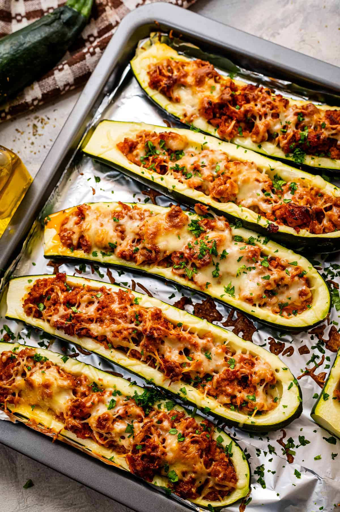

Italian Stuffed Zucchini

This is an easy, tasty way to use up zucchini.
I have listed the ingredients per person so the amount can be adjusted,
depending on how much zucchini you have.
Can be made lacto-vegetarian or vegan.
Ingredients
- 1 zucchini
- 2 tablespoons Italian-style dried bread crumbs
- 2 tablespoons grated Parmesan cheese
- ⅔ cup frozen burger-style crumbles
- ½ cup spaghetti sauce
- ¼ cup shredded mozzarella cheese
Steps
- Preheat oven to 350 degrees F (175 degrees C).
- Slice each zucchini in half lengthwise. Hollow out the zucchini. Place the scraped out zucchini into a medium bowl. Combine zucchini, bread crumbs, Parmesan cheese, burger-style crumbles and pasta sauce. Mix well.
- Place mixture into hollowed out zucchini. Arrange zucchini in a baking dish, sprinkle with mozzarella cheese; bake for 40 minutes.